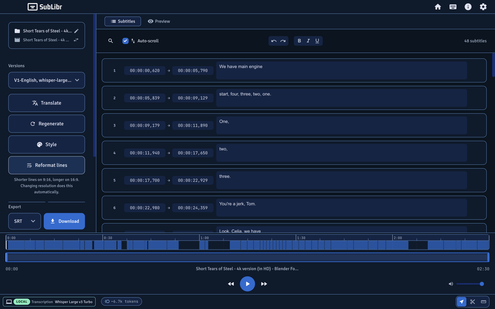

01 Transcribe
Speech models that return times.
SubLibr only transcribes with models that stamp cues. Generate from the sidebar, or import SRT, VTT, or ASS.
- Local: Whisper Large v3 Turbo via
whisper-cli(99 languages). Optional ivrit.ai for Hebrew. - Cloud: Gemini 3.5 Transcribe, or OpenAI Whisper (
whisper-1). - Long files split into overlapping parts, stitch at boundaries, then fill gaps.
